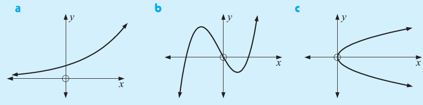

Definición de función
Definición de función
Una función real es una relación entre dos magnitudes que toman valores sobre dos subconjuntos \(A,B\) de \(\mathbb{R}\) de forma que a un valor cualquiera de una (x, variable independiente) le hacemos corresponder un único valor de la otra (y, variable dependiente).
Para indicar que la variable \( y \) depende o es función de otra, \( x \), se usa la notación \( y = f(x) \), que se lee:
“y es la imagen de x mediante la función f”.
Para indicar que la variable \( y \) depende o es función de otra, \( x \), se usa la notación \( y = f(x) \), que se lee:
“y es la imagen de x mediante la función f”.
\( f : A \to B,\quad x \mapsto f(x) \)
Ejemplo · Expresión algebraica
Sea la función \( f:\mathbb{R}\to\mathbb{R} \) dada por
\( \displaystyle f(x)=2x^{2}-3x+1 \)
Por ejemplo, \( f(2)=2\cdot 4-6+1=3 \).Ejemplo · Tabla de valores
Definimos \( g \) por los pares \((x, g(x))\) listados en la tabla:
Aquí la función queda definida solo en los puntos de la tabla.
| \(x\) | \(-2\) | \(-1\) | \(0\) | \(1\) | \(2\) |
|---|---|---|---|---|---|
| \(g(x)\) | \(5\) | \(2\) | \(1\) | \(2\) | \(5\) |
Ejemplo · Gráfica

Ejemplo · Expresión escrita
“La función que a cada número real \(x\) le asigna su valor absoluto”.
Una prueba gráfica
- Duración:
- 3
- Agrupamiento:
- gran grupo
Indica cuál de las siguientes gráficas corresponden a funciones:
